25+ Christmas Salmon Recipes for a Festive Holiday Dinner
📌 Save to Pinterest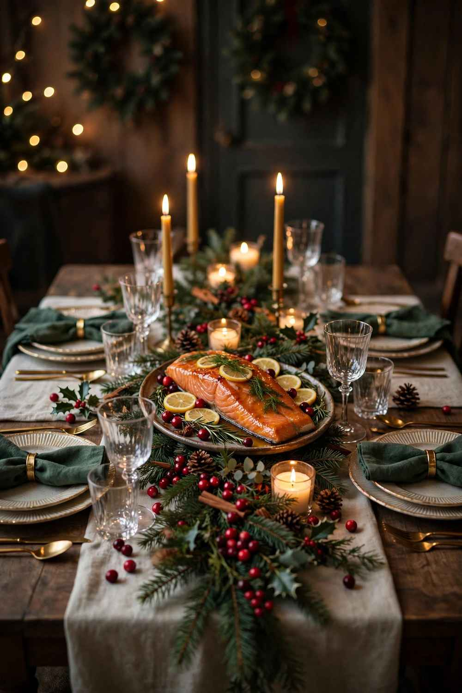
Salmon is the Christmas main that does it all: it cooks fast, it looks beautiful on the table, and it takes to every flavor of the season — honey and garlic, cranberry and maple, smoky spice and bright citrus. These twenty-five salmon recipes cover glazed fillets, crisp-crusted bakes, showpiece Wellingtons and cozy chowder, so whether you want a fifteen-minute fillet or a centerpiece to slice at the table, there is a salmon here for your Christmas dinner.
How to plan a Christmas salmon dinner
Pick your salmon by the occasion: quick glazed or blackened fillets for a weeknight-feeling Christmas Eve, a Wellington or cedar plank salmon when you want a centerpiece, and a chowder or foil packets when the table is full of kids and casual eaters. Buy fillets of even thickness so they cook at the same rate, and take the salmon out of the fridge 15 minutes before cooking so it cooks evenly. Most fillets need only 12 minutes in a hot oven — set a timer, because salmon goes from perfect to dry fast.
Good to know: Everything is written in American English, and measurements use US customary units — cups, tablespoons, and Fahrenheit — for cooks in the United States. Always follow safe food-handling guidance, and check labels for allergens when cooking for others.
Food safety: cook salmon to 145°F (63°C) — the fish should flake easily with a fork. Keep raw salmon cold until cooking, and refrigerate leftovers within 2 hours. Check with a food thermometer.
Glazed & baked salmon
Glazed fillets that bake in minutes — sweet, savory and ready before the table is set.
1. Honey Garlic Glazed Salmon
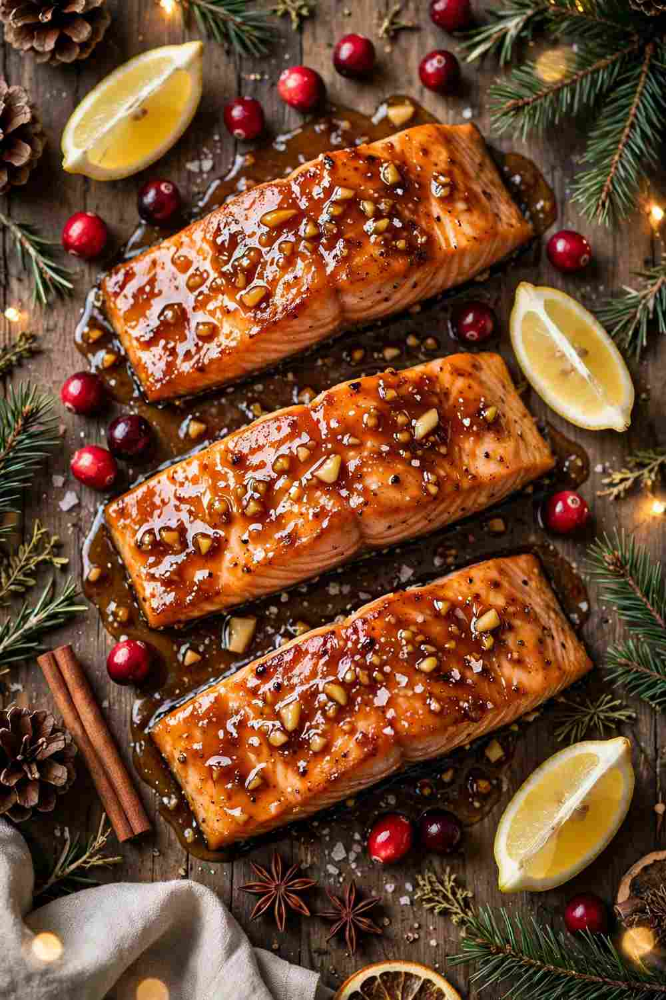
A glossy honey garlic glaze turns simple salmon fillets into a Christmas centerpiece. The fillets sear skin-side down until the skin is crisp, then the sweet, garlicky glaze bubbles into a sticky coating brightened with lemon. It tastes of honey, garlic and soy in perfect balance, and it is ready in minutes, which makes it ideal for a busy holiday evening.
Ingredients
- 4 salmon fillets (6 oz each)
- 3 tbsp honey
- 3 garlic cloves
- 2 tbsp soy sauce
- 1 tbsp lemon juice
- 1 tbsp olive oil
Directions
- Pat the salmon fillets dry with paper towels.
- In a small bowl, whisk together the honey, minced garlic, soy sauce and lemon juice until smooth.
- Heat the olive oil in a large skillet over medium-high heat until it shimmers.
- Place the salmon skin-side down and sear for 4 minutes without moving it, until the skin is crisp and the flesh is mostly opaque.
- Flip the fillets and pour the honey garlic mixture over them. Cook for 3 more minutes, spooning the glaze over the fish as it thickens.
- Remove from the heat when the salmon flakes easily and the glaze coats the fillets. Serve warm with the pan glaze spooned over the top.
Food safety: cook the salmon to 145°F (63°C) — check with a food thermometer.
2. Maple Dijon Salmon Fillets
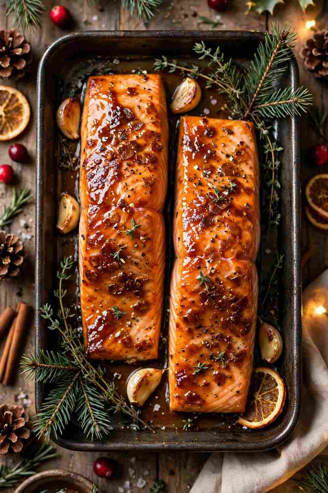
Sweet maple syrup and sharp Dijon mustard make a glaze that bakes into a golden, lightly caramelized coat over tender salmon. A little garlic and thyme keep it savory, so the sweetness never feels heavy. The fillets come out flaky and fragrant, and the dish needs only one bowl and one pan, which makes it an easy, elegant choice for Christmas dinner.
Ingredients
- 4 salmon fillets
- 3 tbsp maple syrup
- 2 tbsp Dijon mustard
- 1 tbsp olive oil
- 1 garlic clove
- 1 tsp thyme
Directions
- Preheat the oven to 400°F and line a baking sheet with parchment paper.
- In a small bowl, whisk the maple syrup, Dijon mustard, olive oil, minced garlic and thyme until smooth.
- Pat the salmon fillets dry and place them skin-side down on the prepared sheet.
- Brush the maple Dijon mixture generously over the top and sides of each fillet.
- Bake for 12 minutes, until the salmon flakes easily with a fork and the glaze is bubbling at the edges.
- Rest the fillets for 2 minutes, then serve warm with any glaze from the pan spooned over the top.
Food safety: cook the salmon to 145°F (63°C) — check with a food thermometer.
3. Garlic Butter Salmon with Fresh Herbs
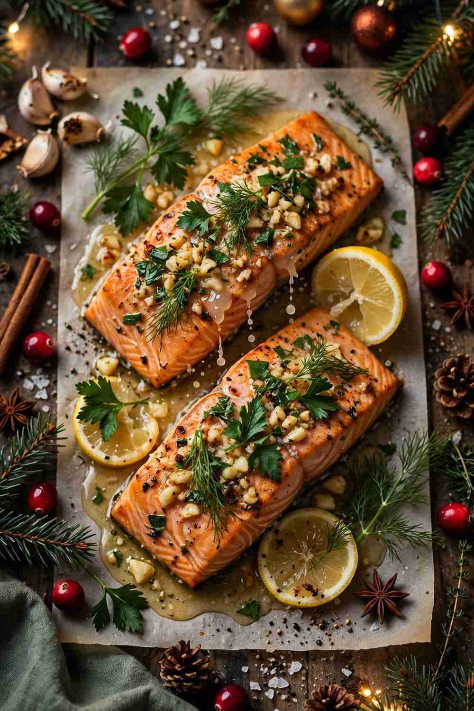
Rich melted butter, plenty of garlic and a shower of fresh parsley and dill turn salmon fillets into a restaurant-style main that is simple enough for a weeknight and special enough for Christmas. The butter is spooned over the fish as it cooks, so every bite is moist and fragrant. A squeeze of lemon at the end keeps the richness bright and clean.
Ingredients
- 4 salmon fillets
- 4 tbsp butter
- 4 garlic cloves
- 1 tbsp chopped parsley
- 1 tbsp chopped dill
- 1 lemon
- salt and pepper
Directions
- Pat the salmon fillets dry and season both sides with salt and pepper.
- Melt the butter in a large skillet over medium heat, then add the minced garlic and cook for 30 seconds until fragrant.
- Place the salmon skin-side down in the skillet and cook for 4 minutes without moving it.
- Flip the fillets and spoon the hot garlic butter over the tops as they cook for 3 more minutes.
- Sprinkle the chopped parsley and dill over the salmon and squeeze the lemon over the pan.
- Cook for 1 minute more, until the salmon flakes easily, then serve warm with the pan butter spooned over.
Food safety: cook the salmon to 145°F (63°C) — check with a food thermometer.
4. Lemon Herb Baked Salmon
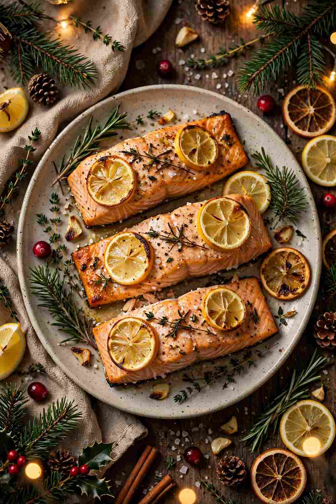
Bright lemon, rosemary and thyme give this baked salmon a fresh, piney flavor that suits a Christmas table perfectly. The fillets roast in the oven with lemon slices on top, so the flesh stays moist and picks up a gentle citrus perfume. It is light, clean and simple, and it pairs well with roasted vegetables, potatoes or a crisp green salad.
Ingredients
- 4 salmon fillets
- 2 tbsp olive oil
- 1 lemon
- 2 tsp chopped rosemary
- 1 tsp thyme
- 2 garlic cloves
- salt and pepper
Directions
- Preheat the oven to 400°F and line a baking sheet with parchment paper.
- Pat the salmon fillets dry and rub them all over with the olive oil.
- Mix the lemon zest, chopped rosemary, thyme and minced garlic, then press the mixture onto the fillets and season with salt and pepper.
- Place the fillets skin-side down on the sheet and lay thin lemon slices over the top of each one.
- Bake for 12 minutes, until the salmon flakes easily with a fork and the flesh is opaque throughout.
- Rest for 2 minutes, then serve warm with the roasted lemon slices and any pan juices spooned over.
Food safety: cook the salmon to 145°F (63°C) — check with a food thermometer.
5. Cranberry Glazed Salmon
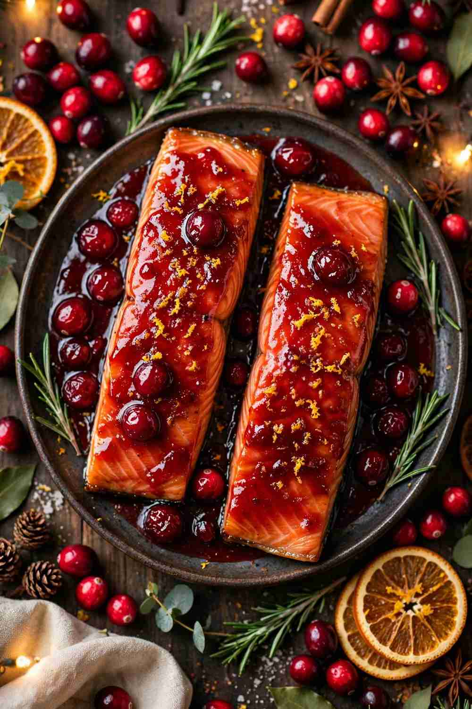
Fresh cranberries simmered with maple syrup, balsamic vinegar and orange zest make a ruby-red glaze that looks made for Christmas. The tart berries balance the sweet syrup, and the glaze bakes onto the salmon in a shiny, festive coat. It is a beautiful centerpiece that tastes as bright and seasonal as it looks, with very little hands-on work.
Ingredients
- 4 salmon fillets
- 1 cup fresh cranberries
- 1/4 cup maple syrup
- 1 tbsp balsamic vinegar
- 1 tsp orange zest
- 1 tbsp olive oil
Directions
- Preheat the oven to 400°F and line a baking sheet with parchment paper.
- In a small saucepan, combine the cranberries, maple syrup, balsamic vinegar and orange zest.
- Simmer over medium heat for 5 to 7 minutes, stirring often, until the berries burst and the mixture thickens into a glaze.
- Pat the salmon fillets dry, place them skin-side down on the sheet and brush generously with the cranberry glaze.
- Bake for 12 minutes, basting once halfway through with more glaze from the pan.
- Rest for 2 minutes, then serve warm with the remaining cranberry glaze spooned over the top.
Food safety: cook the salmon to 145°F (63°C) — check with a food thermometer.
Crusted, spiced & glazed
Crusted, spiced and glazed fillets with crisp tops and tender, flaky centers.
6. Brown Sugar Mustard Glazed Salmon
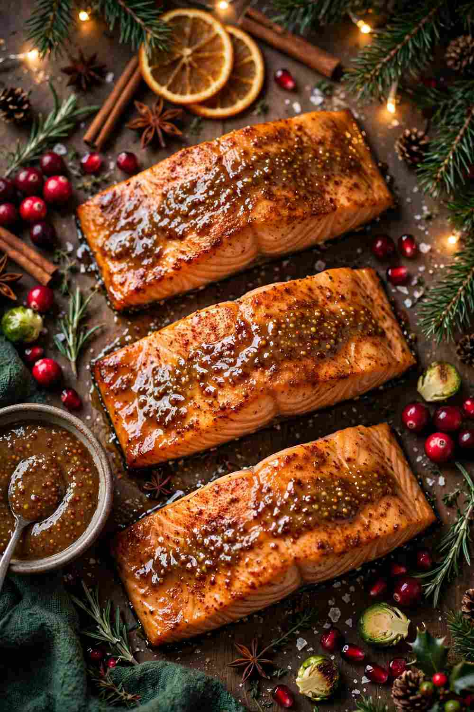
Brown sugar and whole-grain mustard melt together into a sweet, tangy paste that caramelizes at the edges of the salmon as it bakes. A little paprika adds warmth and color, and the glaze turns glossy and golden in the oven. The result is a rich, sticky fillet with crisp caramelized corners and tender, flaky flesh underneath.
Ingredients
- 4 salmon fillets
- 1/4 cup brown sugar
- 2 tbsp whole-grain mustard
- 1 tbsp olive oil
- 1 tsp paprika
- salt and pepper
Directions
- Preheat the oven to 400°F and line a baking sheet with parchment paper.
- In a small bowl, mix the brown sugar, whole-grain mustard, olive oil and paprika into a thick paste.
- Pat the salmon fillets dry, place them skin-side down on the sheet and season lightly with salt and pepper.
- Spread the brown sugar mustard paste evenly over the top of each fillet.
- Bake for 12 minutes, until the glaze is bubbling and caramelized at the edges and the salmon flakes easily.
- Rest for 2 minutes, then serve warm, scraping any caramelized glaze from the pan over the fillets.
Food safety: cook the salmon to 145°F (63°C) — check with a food thermometer.
7. Pesto Crusted Salmon
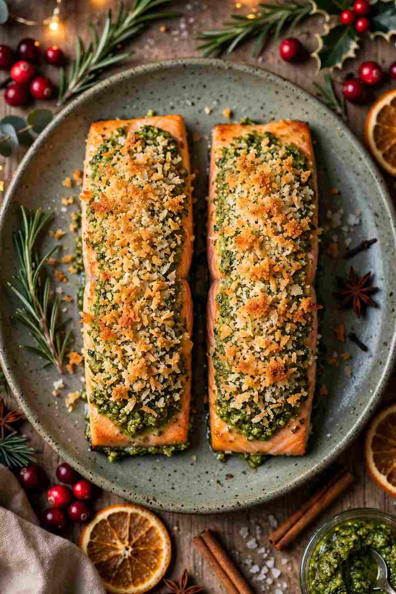
Basil pesto spread under a crunchy Parmesan and panko crumb gives this salmon two layers of flavor: bright, herby pesto below and a golden, crisp crust on top. The fillets bake in the oven while the crust turns golden, and the pesto keeps the fish moist underneath. It looks impressive on a Christmas table and takes only a few minutes to assemble.
Ingredients
- 4 salmon fillets
- 1/2 cup basil pesto
- 1/2 cup panko breadcrumbs
- 2 tbsp grated Parmesan
- 1 tbsp olive oil
Directions
- Preheat the oven to 400°F and line a baking sheet with parchment paper.
- Pat the salmon fillets dry and place them skin-side down on the prepared sheet.
- Spread the basil pesto evenly over the top of each fillet.
- In a small bowl, mix the panko breadcrumbs, grated Parmesan and olive oil until the crumbs are evenly coated.
- Press the crumb mixture firmly onto the pesto layer on each fillet.
- Bake for 12 minutes, until the crust is golden and crisp and the salmon flakes easily with a fork. Rest for 2 minutes, then serve warm.
Food safety: cook the salmon to 145°F (63°C) — check with a food thermometer.
8. Parmesan Crusted Salmon
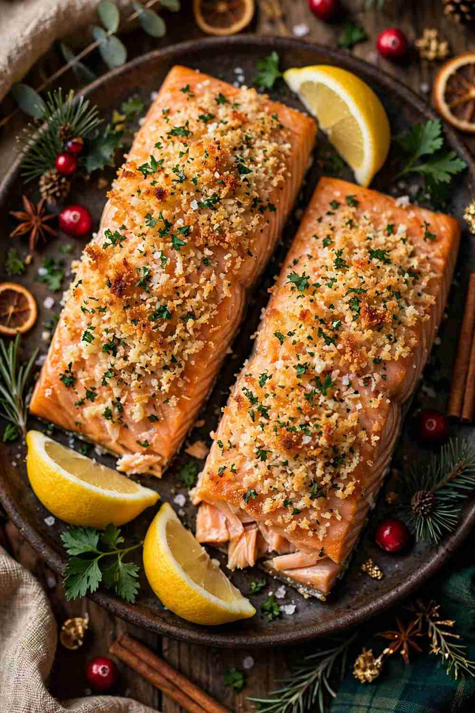
A golden crust of Parmesan, panko and parsley bakes onto the salmon, giving each fillet a crisp, savory top and tender flesh below. Garlic powder and melted butter bind the crumbs and help them brown evenly in the oven. It is a simple, crowd-pleasing main that feels festive without any fuss, and it pairs well with roasted vegetables or a fresh salad.
Ingredients
- 4 salmon fillets
- 1/2 cup grated Parmesan
- 1/2 cup panko breadcrumbs
- 1 tbsp chopped parsley
- 1 tsp garlic powder
- 2 tbsp melted butter
Directions
- Preheat the oven to 400°F and line a baking sheet with parchment paper.
- In a small bowl, mix the grated Parmesan, panko breadcrumbs, chopped parsley and garlic powder with the melted butter.
- Pat the salmon fillets dry and place them skin-side down on the prepared sheet.
- Press the Parmesan crumb mixture firmly and evenly onto the top of each fillet.
- Bake for 12 minutes, until the crust is golden and crisp and the salmon flakes easily with a fork.
- Rest for 2 minutes, then serve warm with any crisp crumbs from the pan scattered over the top.
Food safety: cook the salmon to 145°F (63°C) — check with a food thermometer.
9. Cajun Blackened Salmon
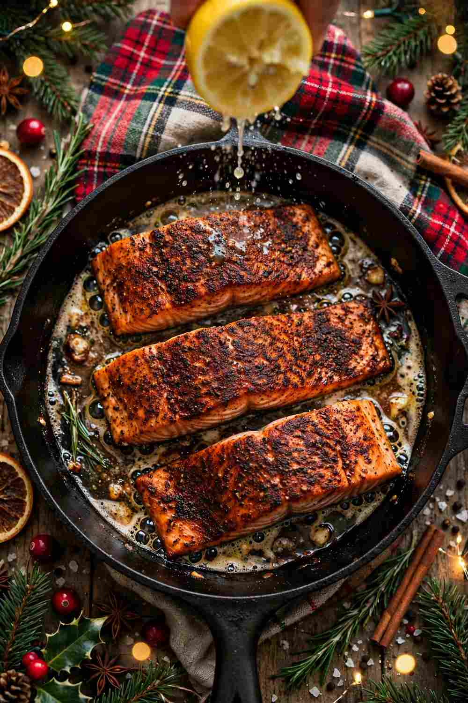
Smoky Cajun seasoning and paprika form a dark, spicy crust on the salmon when it hits a hot buttered skillet. The outside turns deeply browned and fragrant while the inside stays moist and tender. A squeeze of lemon at the end cuts through the heat and keeps the dish bright. It is bold, fast and perfect for a Christmas dinner with a little kick.
Ingredients
- 4 salmon fillets
- 2 tbsp Cajun seasoning
- 1 tsp paprika
- 1 tbsp olive oil
- 1 lemon
- butter for the pan
Directions
- Pat the salmon fillets dry and rub them all over with the Cajun seasoning and paprika.
- Heat the butter in a large skillet over medium-high heat until it foams and just begins to brown.
- Place the salmon in the hot skillet, skin-side down if the skin is on, and sear for 3 minutes without moving it.
- Flip the fillets carefully and sear for 3 more minutes, until the outside is dark and blackened and the fish flakes easily.
- Squeeze lemon over the salmon in the pan and let it sizzle for a few seconds.
- Serve immediately with lemon wedges and any browned butter from the pan spooned over the top.
Food safety: cook the salmon to 145°F (63°C) — check with a food thermometer.
10. Teriyaki Glazed Salmon
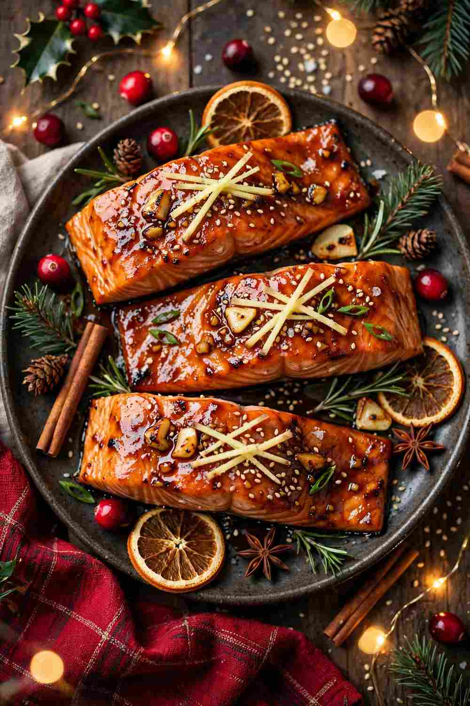
A sweet soy teriyaki glaze, simmered with honey, ginger and garlic, brushes onto salmon fillets and broils into a shiny, caramelized coat. The glaze thickens as it cooks and clings to the fish in a glossy layer. A sprinkle of sesame seeds adds crunch and a nutty finish. It is a simple, elegant main with a lovely sweet-savory balance.
Ingredients
- 4 salmon fillets
- 1/4 cup soy sauce
- 2 tbsp honey
- 1 tbsp rice vinegar
- 1 tsp grated ginger
- 1 garlic clove
- sesame seeds
Directions
- In a small saucepan, combine the soy sauce, honey, rice vinegar, grated ginger and minced garlic.
- Simmer over medium heat for 3 to 4 minutes, stirring often, until the sauce is slightly thick and glossy.
- Preheat the broiler and line a baking sheet with foil, then place the salmon fillets skin-side down on it.
- Brush the teriyaki glaze generously over the top and sides of each fillet.
- Broil for 8 minutes, basting once halfway through with more glaze, until the salmon flakes easily and the glaze is bubbling.
- Sprinkle with sesame seeds and serve warm with the remaining glaze spooned over the top.
Food safety: cook the salmon to 145°F (63°C) — check with a food thermometer.
Bright & showpiece salmon
Citrus-bright and showpiece salmon — the dishes that make Christmas dinner feel like an occasion.
11. Orange Ginger Salmon
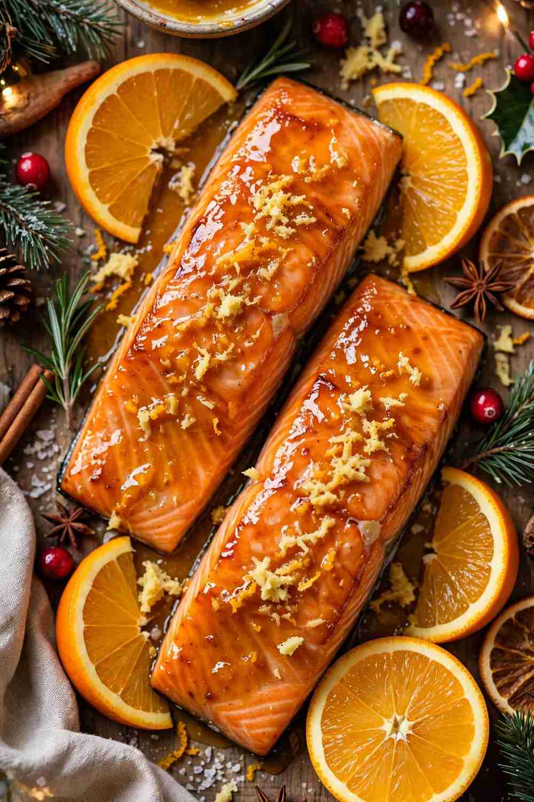
Fresh orange juice and grated ginger simmer down into a bright, citrusy glaze with a warm, spicy edge. Honey rounds out the sharpness, and a little soy sauce adds depth. Brushed over salmon and baked, the glaze turns glossy and lightly caramelized. It is a fresh, festive flavor that suits a Christmas dinner and feels light after a rich holiday meal.
Ingredients
- 4 salmon fillets
- 1/2 cup orange juice
- 2 tbsp honey
- 1 tbsp grated ginger
- 1 tbsp soy sauce
- 1 tsp orange zest
Directions
- Preheat the oven to 400°F and line a baking sheet with parchment paper.
- In a small saucepan, combine the orange juice, honey, grated ginger, soy sauce and orange zest.
- Simmer over medium heat for 5 to 7 minutes, stirring often, until the mixture is reduced by half and slightly syrupy.
- Pat the salmon fillets dry, place them skin-side down on the sheet and brush generously with the orange ginger glaze.
- Bake for 12 minutes, until the salmon flakes easily with a fork and the glaze is bubbling at the edges.
- Rest for 2 minutes, then serve warm with the remaining glaze spooned over the fillets.
Food safety: cook the salmon to 145°F (63°C) — check with a food thermometer.
12. Salmon Wellington
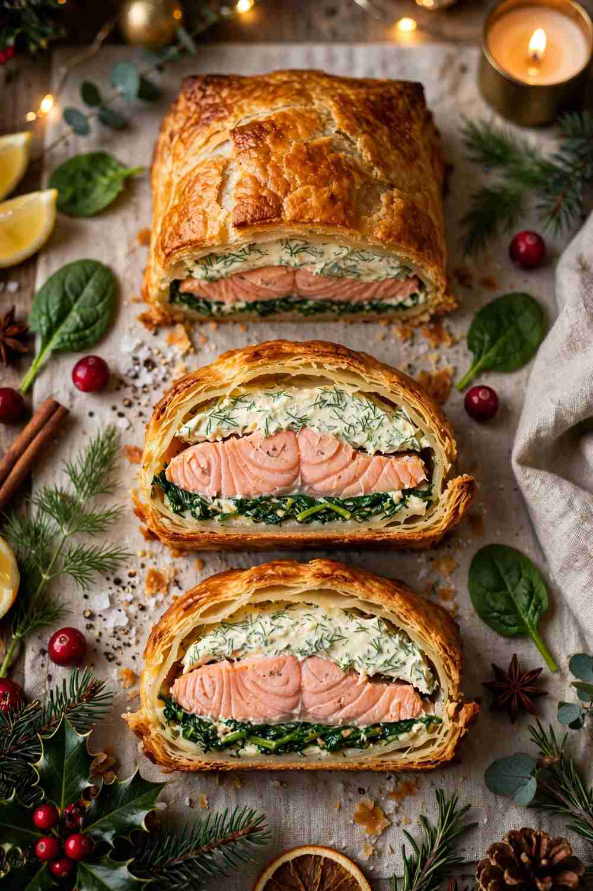
Salmon fillets are layered with creamy dill-spread cheese and fresh spinach, then wrapped in golden puff pastry for a show-stopping Christmas main. The pastry bakes crisp and flaky while the salmon inside stays moist and tender. Sliced open at the table, it reveals beautiful layers of pink salmon, green spinach and golden crust that look as festive as they taste.
Ingredients
- 4 salmon fillets
- 1 sheet puff pastry
- 4 oz cream cheese
- 2 cups spinach
- 1 tbsp dill
- 1 egg
- salt and pepper
Directions
- Preheat the oven to 400°F and line a baking sheet with parchment paper.
- Unroll the puff pastry on a lightly floured surface and cut it into 4 equal rectangles.
- Spread the cream cheese mixed with dill over the center of each rectangle, then layer the spinach on top.
- Place a salmon fillet on each bed of spinach and season lightly with salt and pepper.
- Fold the pastry over the salmon, press the edges to seal, and place the parcels seam-side down on the sheet.
- Brush the tops with beaten egg and bake for 20 minutes, until the pastry is puffed and golden. Rest 5 minutes before serving.
Food safety: cook the salmon to 145°F (63°C) — check with a food thermometer.
13. Salmon en Papillote with Winter Vegetables
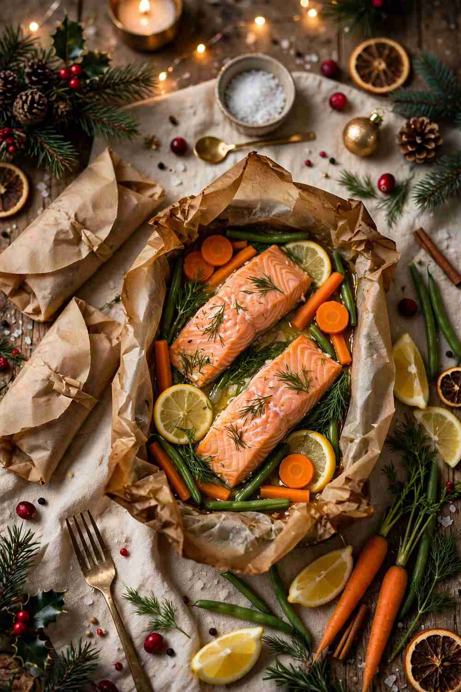
Salmon fillets steam gently inside sealed parchment packets with carrots, green beans, lemon and dill, so the fish stays moist and the vegetables cook in the fragrant juices. Opening each packet at the table releases a puff of herby steam that feels special and festive. It is a light, elegant main with almost no cleanup, since the parchment goes straight in the bin.
Ingredients
- 4 salmon fillets
- 2 cups sliced carrots
- 1 cup green beans
- 1 lemon
- 2 tbsp olive oil
- 1 tbsp dill
- salt and pepper
Directions
- Preheat the oven to 400°F and cut 4 large squares of parchment paper.
- Place a salmon fillet in the center of each square and arrange the sliced carrots and green beans around it.
- Drizzle the olive oil over the salmon and vegetables, then season with salt and pepper.
- Top each fillet with lemon slices and sprinkle the dill over the top.
- Fold the parchment over the salmon and crimp the edges tightly to seal each packet.
- Place the packets on a baking sheet and bake for 15 minutes, until the salmon flakes easily. Serve in the packets, opened at the table.
Food safety: cook the salmon to 145°F (63°C) — check with a food thermometer.
14. Cedar Plank Salmon with Brown Sugar Rub
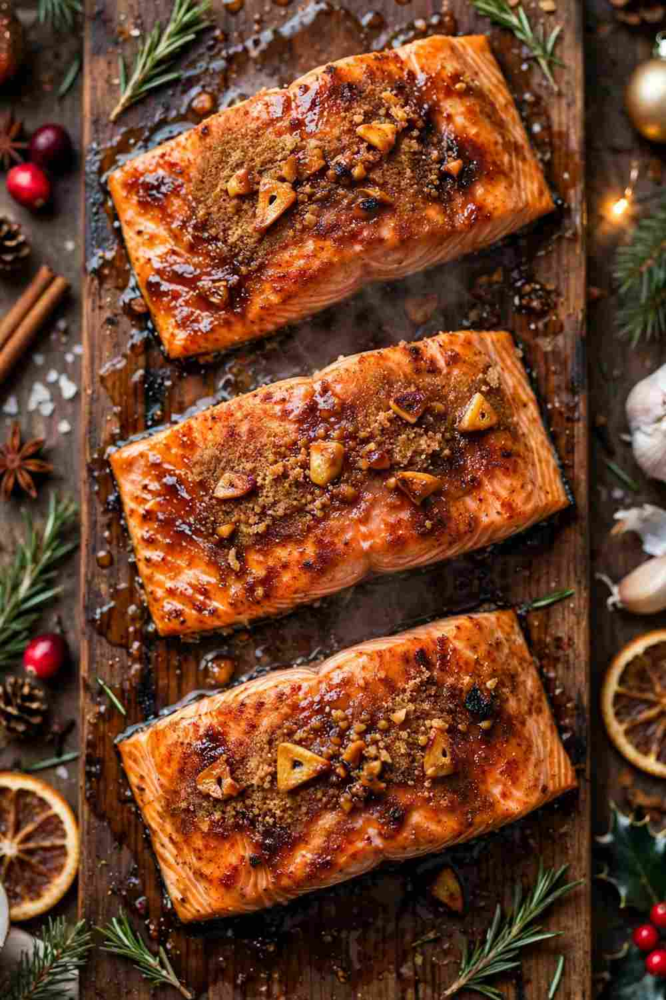
A soaked cedar plank gives the salmon a gentle smoky flavor as it roasts on the grill, while a brown sugar rub with smoked paprika and garlic caramelizes on top. The plank keeps the fish moist and adds a woodsy aroma that suits an outdoor Christmas cookout or a festive grill night. It is a simple, dramatic main that tastes like a holiday feast.
Ingredients
- 4 salmon fillets
- 1 cedar plank
- 3 tbsp brown sugar
- 1 tsp smoked paprika
- 1/2 tsp garlic powder
- 1 tbsp olive oil
Directions
- Soak the cedar plank in water for 1 hour, weighing it down so it stays fully submerged.
- Pat the salmon fillets dry and rub them with the olive oil.
- Mix the brown sugar, smoked paprika and garlic powder, then press the rub evenly over the salmon.
- Preheat the grill to medium heat and place the soaked plank on the grates for 3 minutes until it begins to smoke.
- Place the salmon on the hot plank, close the lid and grill for 15 minutes, until the fish flakes easily.
- Remove the plank from the grill and serve the salmon directly from it, warm and smoky.
Food safety: cook the salmon to 145°F (63°C) — check with a food thermometer.
15. Miso Glazed Salmon
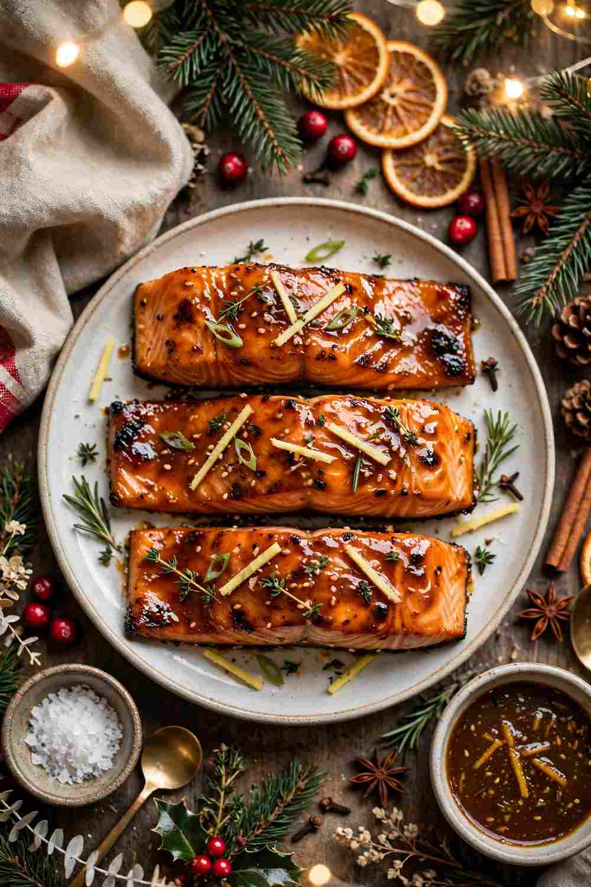
White miso, mirin, soy sauce, honey and ginger make a savory-sweet marinade that soaks into the salmon and caramelizes under the broiler. The glaze turns glossy and lightly charred at the edges while the fish stays tender inside. It is a refined, umami-rich main that feels special on a Christmas table and needs only a short marinade to work its magic.
Ingredients
- 4 salmon fillets
- 3 tbsp white miso
- 2 tbsp mirin
- 1 tbsp soy sauce
- 1 tbsp honey
- 1 tsp grated ginger
Directions
- In a shallow dish, whisk together the white miso, mirin, soy sauce, honey and grated ginger until smooth.
- Add the salmon fillets, turn to coat, and marinate for 30 minutes at room temperature.
- Preheat the broiler and line a baking sheet with foil, then place the fillets skin-side down on it.
- Brush the salmon with a little extra marinade from the dish.
- Broil for 8 minutes, until the glaze is caramelized at the edges and the salmon flakes easily with a fork.
- Rest for 2 minutes, then serve warm with any glaze from the pan spooned over the top.
Food safety: cook the salmon to 145°F (63°C) — check with a food thermometer.
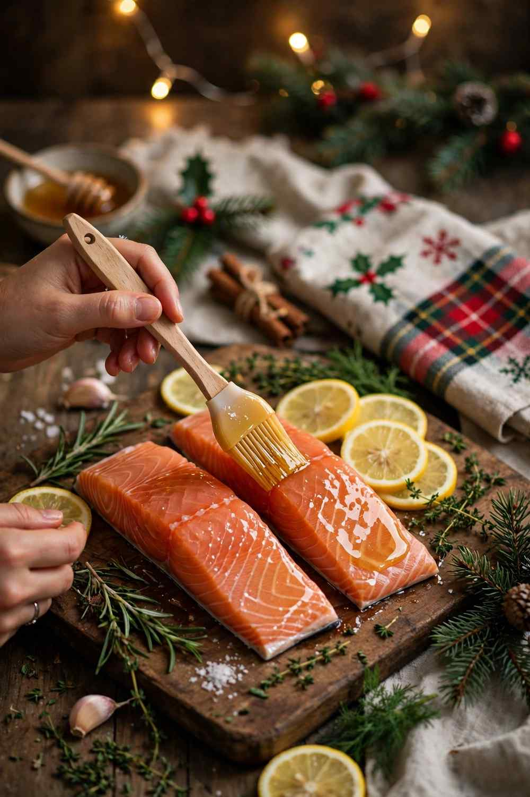
Sweet, tangy & creamy
Sweet, tangy and creamy salmon — rich sauces and fresh toppings for a festive table.
16. Pomegranate Glazed Salmon
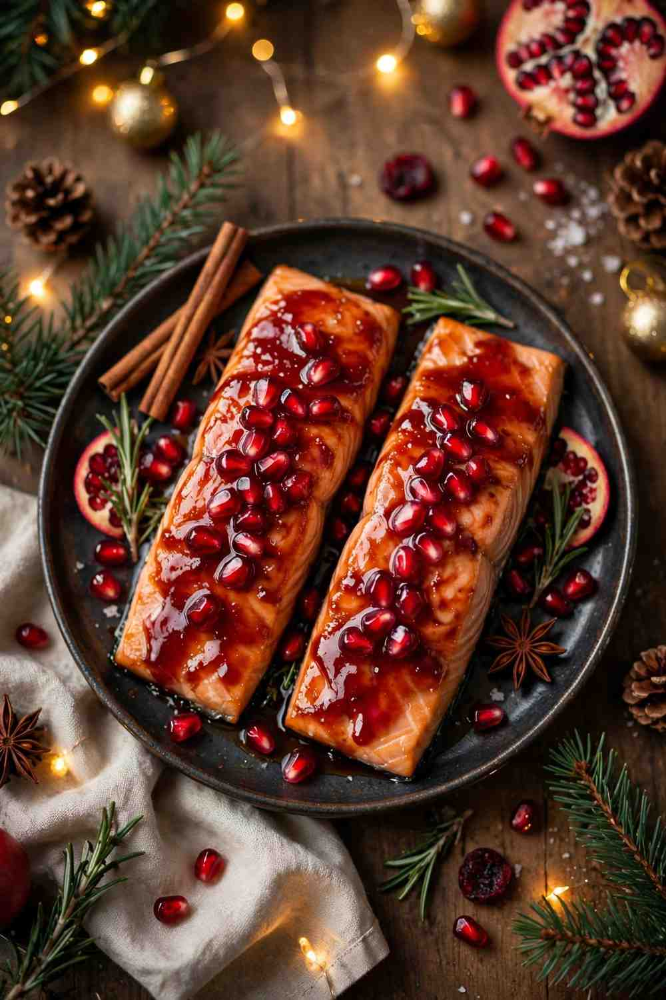
Pomegranate juice simmered with honey and balsamic vinegar reduces into a ruby-red syrup that glazes the salmon in a jewel-bright coat. Fresh pomegranate seeds scattered over the top add crunch, color and a burst of tart juice. It is one of the prettiest dishes on a Christmas table, and the sweet-tart glaze flatters the rich salmon perfectly.
Ingredients
- 4 salmon fillets
- 1 cup pomegranate juice
- 2 tbsp honey
- 1 tbsp balsamic vinegar
- 1/2 cup pomegranate seeds
- 1 tbsp olive oil
Directions
- Preheat the oven to 400°F and line a baking sheet with parchment paper.
- In a small saucepan, combine the pomegranate juice, honey and balsamic vinegar.
- Simmer over medium heat for 8 to 10 minutes, stirring often, until the mixture is syrupy and coats the back of a spoon.
- Pat the salmon fillets dry, place them skin-side down on the sheet and brush generously with the pomegranate glaze.
- Bake for 12 minutes, until the salmon flakes easily and the glaze is bubbling at the edges.
- Rest for 2 minutes, then top with the pomegranate seeds and serve warm with the remaining glaze.
Food safety: cook the salmon to 145°F (63°C) — check with a food thermometer.
17. Dijon Herb Crusted Salmon
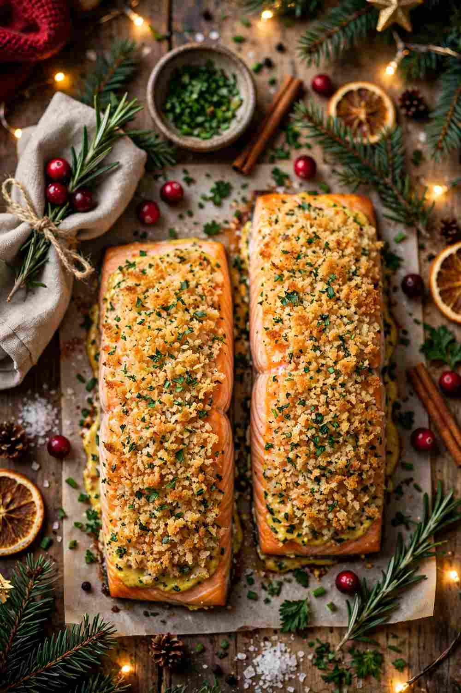
Dijon mustard spread under a crisp crumb of panko, parsley and chives gives this salmon a tangy base and a golden, crunchy top. The mustard keeps the fish moist as it bakes, while the herbs add a fresh, green flavor. It is a simple, elegant main that looks and tastes like a restaurant dish but comes together in minutes.
Ingredients
- 4 salmon fillets
- 3 tbsp Dijon mustard
- 1/2 cup panko breadcrumbs
- 2 tbsp chopped parsley
- 1 tbsp chopped chives
- 1 tbsp olive oil
Directions
- Preheat the oven to 400°F and line a baking sheet with parchment paper.
- Pat the salmon fillets dry and place them skin-side down on the prepared sheet.
- Spread the Dijon mustard evenly over the top of each fillet.
- In a small bowl, mix the panko breadcrumbs, chopped parsley, chopped chives and olive oil until the crumbs are evenly coated.
- Press the crumb mixture firmly onto the mustard layer on each fillet.
- Bake for 12 minutes, until the crust is golden and crisp and the salmon flakes easily with a fork. Serve warm.
Food safety: cook the salmon to 145°F (63°C) — check with a food thermometer.
18. Salmon Piccata with Capers
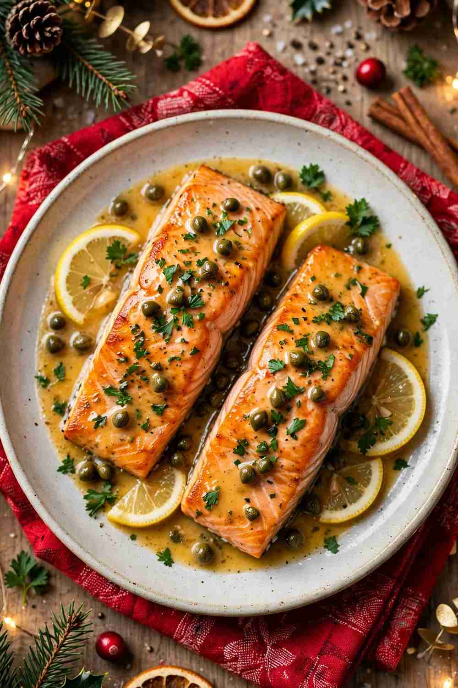
Salmon fillets sear in butter until golden, then finish in a bright lemon-butter sauce with capers and chicken broth. The sauce is tangy, salty and silky, and spooned over the fish it makes every bite shine. Fresh parsley adds a clean, green note at the end. It is a quick, elegant main that feels like a special-occasion dish without a long ingredient list.
Ingredients
- 4 salmon fillets
- 3 tbsp butter
- 2 tbsp capers
- 1 lemon
- 1/2 cup chicken broth
- 1 tbsp chopped parsley
Directions
- Pat the salmon fillets dry.
- Melt the butter in a large skillet over medium-high heat until it foams.
- Sear the salmon for 4 minutes per side, until golden and the fish flakes easily, then remove to a plate.
- Add the chicken broth and lemon juice to the same pan, scraping up the browned bits from the bottom.
- Stir in the capers and simmer for 2 minutes, until the sauce is slightly reduced and glossy.
- Return the salmon to the pan, spoon the sauce over the fillets, and sprinkle with chopped parsley. Serve warm.
Food safety: cook the salmon to 145°F (63°C) — check with a food thermometer.
19. Creamy Tuscan Salmon
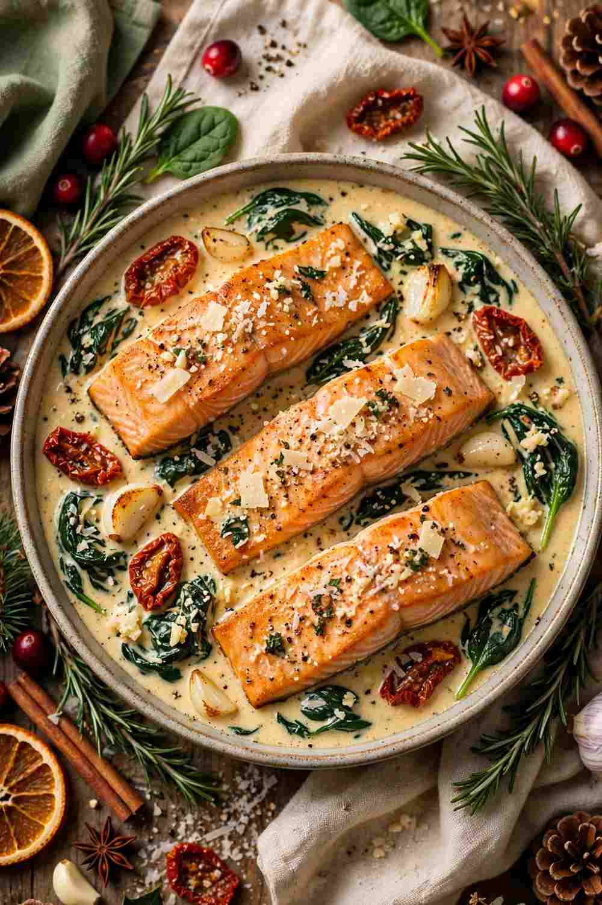
Salmon fillets sear until golden, then simmer briefly in a rich cream sauce with sun-dried tomatoes, wilted spinach, garlic and Parmesan. The sauce is velvety and savory, with sweet-tart tomatoes and a gentle garlic warmth. It is a comforting, restaurant-style main that feels indulgent on a Christmas table, and it comes together in one pan in under half an hour.
Ingredients
- 4 salmon fillets
- 1 cup heavy cream
- 1/2 cup sun-dried tomatoes
- 2 cups spinach
- 3 garlic cloves
- 1/4 cup Parmesan
Directions
- Pat the salmon fillets dry and sear in a large skillet over medium-high heat for 4 minutes per side.
- Remove the salmon to a plate and reduce the heat to medium.
- Add the minced garlic to the same pan and cook for 30 seconds until fragrant.
- Pour in the heavy cream, then stir in the sun-dried tomatoes and grated Parmesan until the sauce is smooth.
- Add the spinach and stir until it wilts, about 1 to 2 minutes.
- Return the salmon to the pan and simmer for 3 minutes, spooning the sauce over the fillets, until the fish flakes easily. Serve warm.
Food safety: cook the salmon to 145°F (63°C) — check with a food thermometer.
20. Salmon with Avocado Salsa
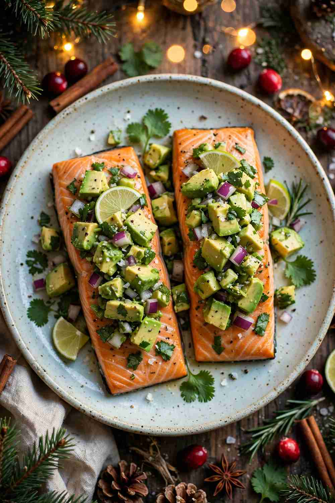
Tender baked salmon gets a fresh, creamy topping of avocado, lime, red onion and cilantro that adds color, crunch and a bright citrus lift. The salsa is cool and zesty against the warm, flaky fish, which makes the dish feel light and festive. It is a simple, healthy-feeling main that still looks impressive on a Christmas dinner table.
Ingredients
- 4 salmon fillets
- 2 avocados
- 1 lime
- 1/4 cup diced red onion
- 1 tbsp chopped cilantro
- 1 tbsp olive oil
Directions
- Preheat the oven to 400°F and line a baking sheet with parchment paper.
- Pat the salmon fillets dry, brush with olive oil and place them skin-side down on the sheet.
- Bake for 12 minutes, until the salmon flakes easily with a fork.
- While the salmon bakes, dice the avocados and toss with the lime juice, diced red onion and chopped cilantro.
- Stir the salsa gently so the avocado stays in chunks and the lime juice coats everything.
- Rest the salmon for 2 minutes, then spoon the avocado salsa generously over each fillet and serve warm.
Food safety: cook the salmon to 145°F (63°C) — check with a food thermometer.
One-pan, packets & cozy
One-pan dinners, foil packets and cozy bowls — salmon with almost no cleanup.
21. Roasted Salmon with Brussels Sprouts and Bacon
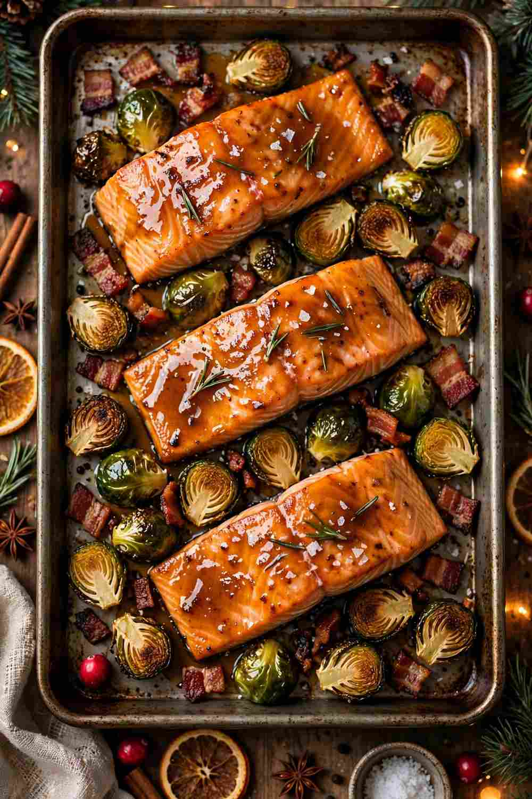
Brussels sprouts and bacon roast together on one sheet pan until crisp and caramelized, then salmon joins the pan with a brush of maple syrup for a sweet, smoky finish. The sprouts turn golden at the edges, the bacon adds salty crunch, and the salmon stays moist. It is a complete one-pan Christmas dinner with almost no cleanup.
Ingredients
- 4 salmon fillets
- 2 cups halved Brussels sprouts
- 4 slices bacon
- 2 tbsp olive oil
- 1 tbsp maple syrup
- salt and pepper
Directions
- Preheat the oven to 425°F and line a large sheet pan with parchment paper.
- Toss the halved Brussels sprouts and bacon with the olive oil, then spread in a single layer on the pan and season with salt and pepper.
- Roast for 15 minutes, until the sprouts are beginning to brown and the bacon is crisping.
- Push the sprouts and bacon to the sides and place the salmon fillets in the center of the pan.
- Brush the salmon with maple syrup and roast for 10 more minutes, until the fish flakes easily and the sprouts are caramelized.
- Rest for 2 minutes, then serve warm, spooning the pan juices over the salmon and sprouts.
Food safety: cook the salmon to 145°F (63°C) — check with a food thermometer.
22. Salmon and Asparagus Foil Packets
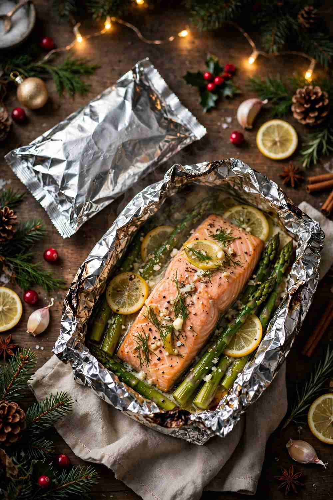
Salmon fillets and asparagus bake together in sealed foil packets with butter, garlic, lemon and dill, so the fish steams in its own fragrant juices and stays perfectly moist. The asparagus turns tender-crisp and picks up the buttery, lemony flavor. It is a fuss-free, elegant main with individual portions that feel special and no dishes to wash afterward.
Ingredients
- 4 salmon fillets
- 1 bunch asparagus
- 4 tbsp butter
- 2 garlic cloves
- 1 lemon
- 1 tbsp chopped dill
Directions
- Preheat the oven to 400°F and cut 4 large squares of heavy-duty foil.
- Place a salmon fillet in the center of each square and arrange the asparagus spears alongside it.
- Top each fillet with butter, minced garlic and lemon slices, then sprinkle the chopped dill over the top.
- Fold the foil over and crimp the edges tightly to seal each packet.
- Place the packets on a baking sheet and bake for 15 minutes, until the salmon flakes easily and the asparagus is tender-crisp.
- Serve the packets on plates, opened carefully at the table so the steam escapes away from you.
Food safety: cook the salmon to 145°F (63°C) — check with a food thermometer.
23. Spicy Honey Sriracha Salmon
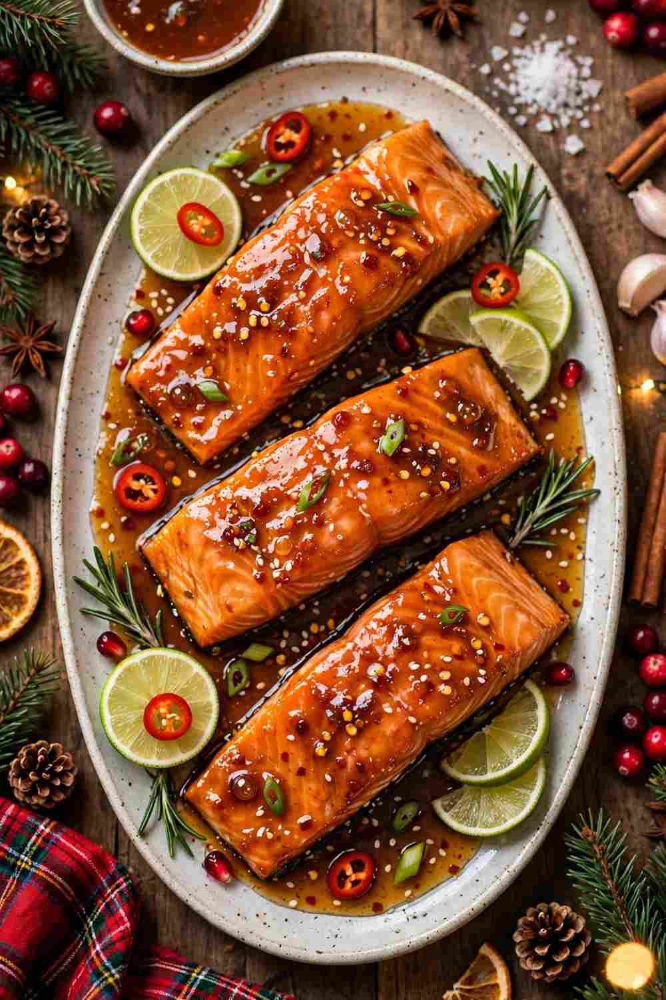
Honey, sriracha, soy sauce and lime juice make a sticky glaze that is sweet, spicy and tangy all at once. Brushed over salmon and baked, it caramelizes into a glossy coat with a gentle heat that builds as you eat. It is a bold, modern main for a Christmas table, and the balance of sweet and heat keeps everyone coming back for more.
Ingredients
- 4 salmon fillets
- 3 tbsp honey
- 2 tbsp sriracha
- 1 tbsp soy sauce
- 1 tsp lime juice
- 1 tbsp olive oil
Directions
- Preheat the oven to 400°F and line a baking sheet with parchment paper.
- In a small bowl, whisk together the honey, sriracha, soy sauce and lime juice until smooth.
- Pat the salmon fillets dry, place them skin-side down on the sheet and brush generously with the glaze.
- Bake for 12 minutes, basting once halfway through with more glaze from the pan.
- Check that the salmon flakes easily with a fork and the glaze is bubbling and lightly caramelized.
- Rest for 2 minutes, then serve warm with the remaining glaze spooned over the fillets.
Food safety: cook the salmon to 145°F (63°C) — check with a food thermometer.
24. Salmon Burgers with Dill Sauce
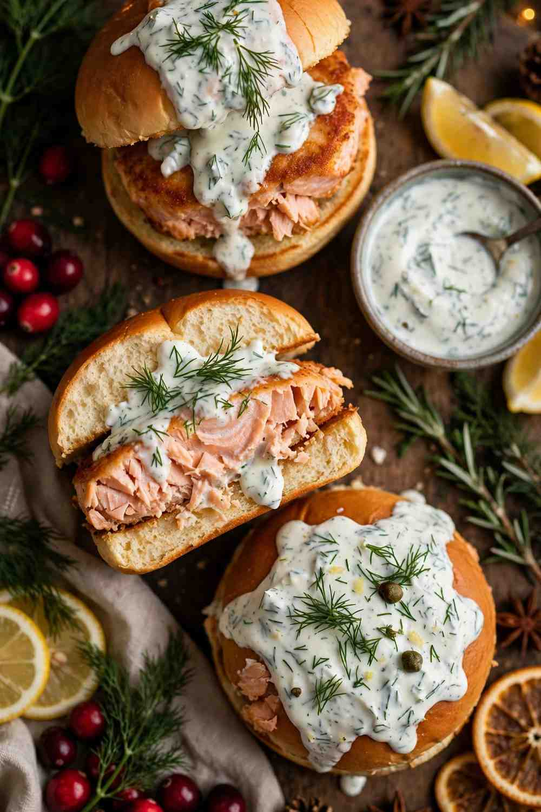
Fresh salmon chopped and mixed with panko, egg, Dijon and onion forms tender patties with a crisp golden outside and a moist, flaky center. They cook in minutes and sit on soft buns with a cool yogurt dill sauce that adds a fresh, herby lift. It is a festive alternative to a traditional Christmas main, and it is easy to make for a crowd.
Ingredients
- 1 1/2 lbs salmon fillet
- 1/2 cup panko breadcrumbs
- 1 egg
- 2 tbsp Dijon mustard
- 1/4 cup diced onion
- 4 buns
- 1/2 cup Greek yogurt
- 1 tbsp dill
Directions
- Chop the salmon fillet into small pieces and place in a large bowl.
- Add the panko breadcrumbs, egg, Dijon mustard and diced onion, then mix gently until just combined.
- Form the mixture into 4 equal patties, pressing firmly so they hold together.
- Heat a nonstick skillet over medium heat and cook the patties for 4 minutes per side, until golden and cooked through.
- While the patties cook, mix the Greek yogurt with the chopped dill to make the sauce.
- Serve the patties on buns with a generous spoonful of yogurt dill sauce on top.
Food safety: cook the salmon to 145°F (63°C) — check with a food thermometer.
25. Creamy Salmon Chowder
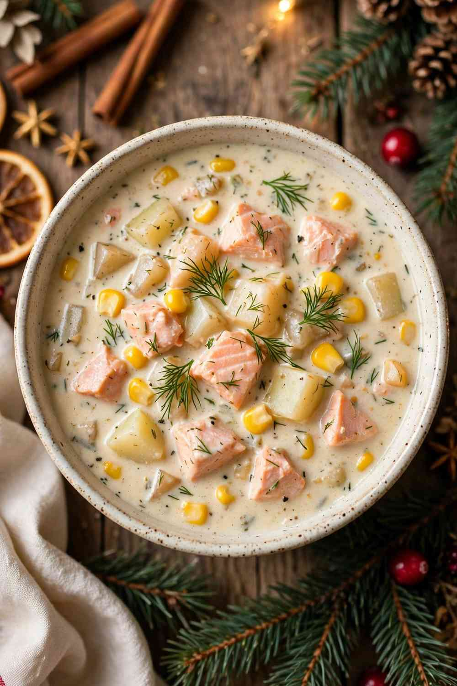
Chunks of salmon simmer in a rich, creamy chowder with tender potatoes, sweet corn and a gentle dill fragrance. The broth is silky and comforting, and the salmon stays in soft, flaky pieces that melt into each spoonful. It is a warm, hearty bowl that suits a cold Christmas evening, and it is easy to make in one pot for family or guests.
Ingredients
- 1 lb salmon fillet
- 2 cups diced potatoes
- 1 cup corn
- 1 onion
- 3 cups chicken broth
- 1 cup heavy cream
- 2 tbsp butter
- 1 tbsp dill
Directions
- Melt the butter in a large pot over medium heat and cook the diced onion for 5 minutes until soft and translucent.
- Add the diced potatoes and chicken broth, then bring the pot to a boil.
- Reduce the heat and simmer for 15 minutes, until the potatoes are tender when pierced with a fork.
- Add the salmon chunks and corn and cook for 8 minutes, until the salmon flakes easily with a fork.
- Stir in the heavy cream and chopped dill, then warm through for 2 minutes without letting it boil.
- Ladle into bowls and serve warm, with the salmon in soft, flaky chunks in every spoonful.
Food safety: cook the salmon to 145°F (63°C) — check with a food thermometer.
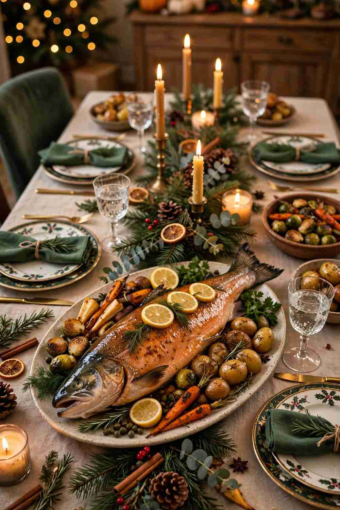
Make-ahead & serving tips
Pat salmon dry before cooking — moisture is the enemy of a crisp skin and a good sear. Cook salmon to 145°F in the thickest part and let it rest for 2 minutes; it keeps cooking off the heat. If you are serving a crowd, bake fillets on one sheet pan so they all finish together, and keep the glaze in a small bowl on the table for spooning over seconds.
Related articles
More roundups from the same table:
- 25+ Easy Christmas Crockpot Recipes — slow cooker mains, soups, sides and desserts for a hands-off holiday table.
- 20+ New Year's Eve Dinner Ideas for Family and Friends — festive mains, from roast beef and salmon to pasta and slow cooker favorites.
- 25+ Christmas Side Dishes for Your Holiday Table — roasted vegetables, creamy potatoes, stuffing and cranberry sauce.
- 15+ Easy Christmas Crockpot Meals for a Crowd — big-batch soups, pies, stews and mains that feed a full table.
Keep exploring
- Browse the Lunch & Dinner roundups — Mains for midday and evening tables.
- Browse all six categories — breakfast, lunch and dinner, desserts, air fryer, healthy recipes, and appetizers.
- More about the kitchen — what The Tasty Recipe Co is and how it works.
About The Tasty Recipe Co: Learn how we research, organize and review our food collections — see our About Us and Editorial Policy pages.
Recipe results can vary with ingredients, equipment, and technique. See our Disclaimer for food-safety and allergy notes.